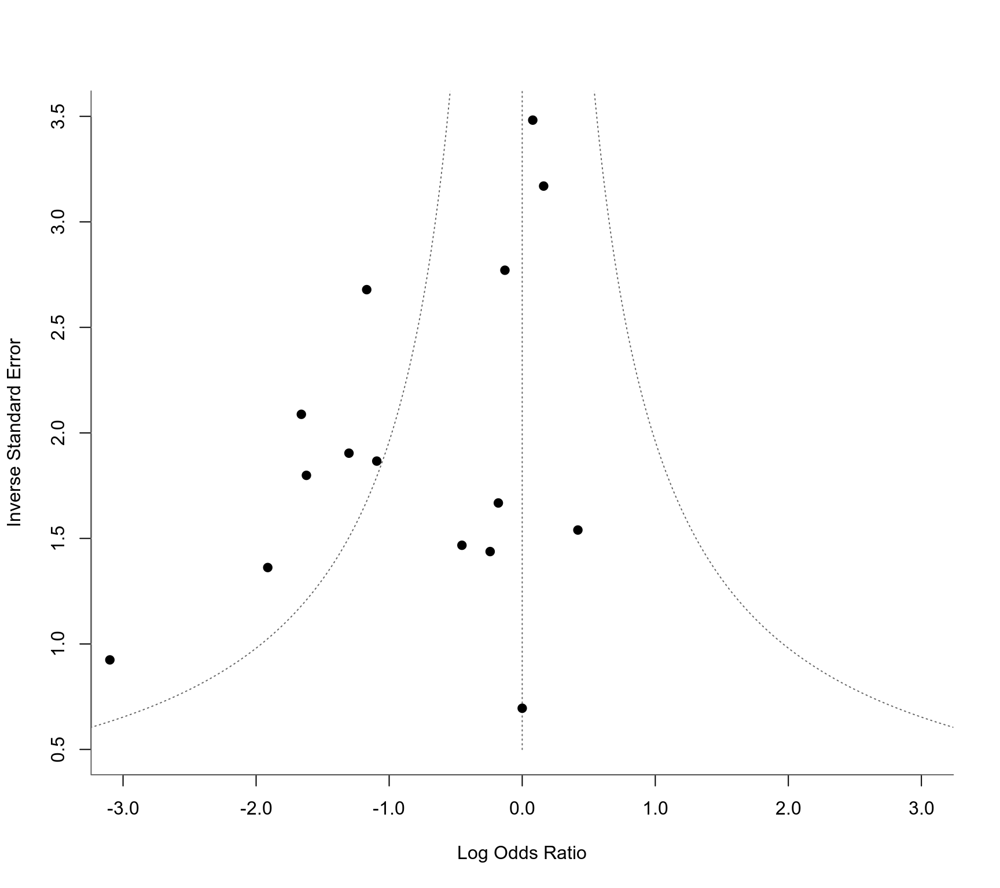

hc.RdThe function can be used to obtain an estimate of the average true effect and corresponding confidence interval under a random-effects model using the method described by Henmi and Copas (2010).
hc(object, ...) # S3 method for rma.uni hc(object, digits, transf, targs, control, ...)
| object | an object of class |
|---|---|
| digits | integer to specify the number of decimal places to which the printed results should be rounded (if unspecified, the default is to take the value from the object). |
| transf | optional argument to specify a function that should be used to transform the estimated true effect and the corresponding interval bounds (e.g., |
| targs | optional arguments needed by the function specified under |
| control | list of control values for the iterative algorithm. If unspecified, default values are defined inside the function. See ‘Note’. |
| ... | other arguments. |
The model specified via object must be a model without moderators (i.e., either a fixed- or a random-effects model and not a fixed-effects with moderators or mixed-effects model).
When using the usual method for fitting a random-effects model (i.e., weighted estimation with inverse-variance weights), the weights assigned to smaller and larger studies become more uniform as the amount of heterogeneity increases. As a consequence, the estimated average effect could become increasingly biased under certain forms of publication bias (where smaller studies on one side of the funnel plot are missing). The method by Henmi and Copas (2010) tries to counteract this problem by providing an estimate of the average true effect that is based on inverse-variance weights as used under a fixed-effects model (which do not take the amount of heterogeneity into consideration). The amount of heterogeneity is still estimated (with the DerSimonian-Laird estimator) and incorporated into the standard error of the estimated average effect and the corresponding confidence interval.
Currently, there is only a method for handling objects of class "rma.uni" with the hc function. It therefore provides a method for conducting a sensitivity analysis after the model has been fitted with the rma.uni function.
An object of class "hc.rma.uni". The object is a list containing the following components:
estimated average true effect.
corresponding standard error.
lower bound of the confidence intervals for the average true effect.
upper bound of the confidence intervals for the average true effect.
some additional elements/values.
The method makes use of the uniroot function. By default, the desired accuracy is set equal to .Machine$double.eps^0.25 and the maximum number of iterations to 1000. The desired accuracy (tol) and the maximum number of iterations (maxiter) can be adjusted with the control argument (i.e., control=list(tol=value, maxiter=value)).
Original code by Henmi and Copas (2010). Corrected for typos by Michael Dewey (lists@dewey.myzen.co.uk). Incorporated into the package with some small adjustments for consistency with the other functions in the package by Wolfgang Viechtbauer (wvb@metafor-project.org).
Henmi, M., & Copas, J. B. (2010). Confidence intervals for random effects meta-analysis and robustness to publication bias. Statistics in Medicine, 29(29), 2969--2983. https://doi.org/10.1002/sim.4029
Viechtbauer, W. (2010). Conducting meta-analyses in R with the metafor package. Journal of Statistical Software, 36(3), 1--48. https://doi.org/10.18637/jss.v036.i03
### calculate log odds ratios and corresponding sampling variances dat <- escalc(measure="OR", ai=ai, n1i=n1i, ci=ci, n2i=n2i, data=dat.lee2004) dat#> id study year ai n1i ci n2i yi vi #> 1 1 Agarwal 2000 18 100 20 100 -0.1301 0.1303 #> 2 2 Agarwal 2002 5 50 18 50 -1.6219 0.3090 #> 3 3 Alkaissi 1999 9 20 7 20 0.4184 0.4218 #> 4 4 Alkaissi 2002 32 135 31 139 0.0792 0.0825 #> 5 5 Allen 1994 9 23 10 23 -0.1795 0.3595 #> 6 6 Andrzejowski 1996 11 18 12 18 -0.2412 0.4838 #> 7 7 Duggal 1998 69 122 80 122 -0.3805 0.0697 #> 8 8 Dundee 1986 3 25 12 25 -1.9124 0.5390 #> 9 9 Ferrera-Love 1996 1 30 1 30 0.0000 2.0690 #> 10 10 Gieron 1993 11 30 19 30 -1.0931 0.2871 #> 11 11 Harmon 1999 7 44 16 39 -1.3021 0.2759 #> 12 12 Harmon 2000 4 47 6 47 -0.4531 0.4643 #> 13 13 Ho 1996 1 30 13 30 -3.0990 1.1702 #> 14 14 Rusy 2002 24 40 71 80 -1.6600 0.2294 #> 15 15 Wang 2002 16 50 53 88 -1.1687 0.1394 #> 16 16 Zarate 2001 28 110 25 111 0.1610 0.0995#> #> Random-Effects Model (k = 16; tau^2 estimator: REML) #> #> tau^2 (estimated amount of total heterogeneity): 0.3526 (SE = 0.2254) #> tau (square root of estimated tau^2 value): 0.5938 #> I^2 (total heterogeneity / total variability): 62.35% #> H^2 (total variability / sampling variability): 2.66 #> #> Test for Heterogeneity: #> Q(df = 15) = 38.4231, p-val = 0.0008 #> #> Model Results: #> #> estimate se zval pval ci.lb ci.ub #> -0.6820 0.2013 -3.3877 0.0007 -1.0766 -0.2874 *** #> #> --- #> Signif. codes: 0 ‘***’ 0.001 ‘**’ 0.01 ‘*’ 0.05 ‘.’ 0.1 ‘ ’ 1 #>### funnel plot as in Henmi and Copas (2010) funnel(res, yaxis="seinv", refline=0, xlim=c(-3,3), ylim=c(.5,3.5), steps=7, digits=1, back="white")### use method by Henmi and Copas (2010) as a sensitivity analysis hc(res)#> #> method tau2 estimate se ci.lb ci.ub #> rma REML 0.3526 -0.6820 0.2013 -1.0766 -0.2874 #> hc DL 0.3325 -0.5145 0.2178 -0.9994 -0.0295 #>### back-transform results to odds ratio scale hc(res, transf=exp)#> #> method tau2 estimate ci.lb ci.ub #> rma REML 0.3526 0.5056 0.3408 0.7502 #> hc DL 0.3325 0.5978 0.3681 0.9709 #>